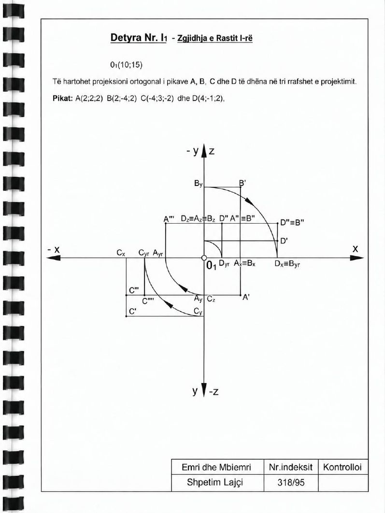

Animacioni vizatimi hap pas hapi, 16 hapa
Hap në dritare të plotë ↗
Në projektor hape në dritare të plotë; tastet ← → ndërrojnë hapin, h hap rrafshet, v ndërron pamjen.
Faqet e librit

Projeksioni ortogonal i pikave A, B, C, D
Të hartohet projeksioni ortogonal i pikave A, B, C dhe D të dhëna në tri rrafshet e projektimit.
Të dhënat: O₁ (10; 15); A (2; 2; 2), B (2; −4; 2), C (−4; 3; −2), D (4; −1; 2)
Në projektor hape në dritare të plotë; tastet ← → ndërrojnë hapin, h hap rrafshet, v ndërron pamjen.
